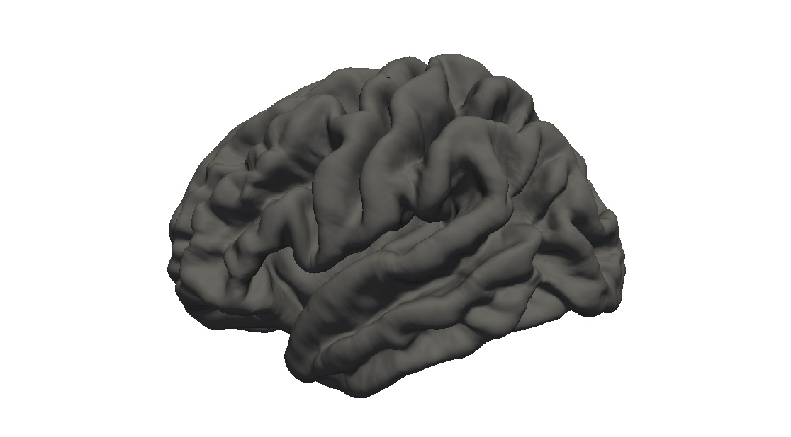
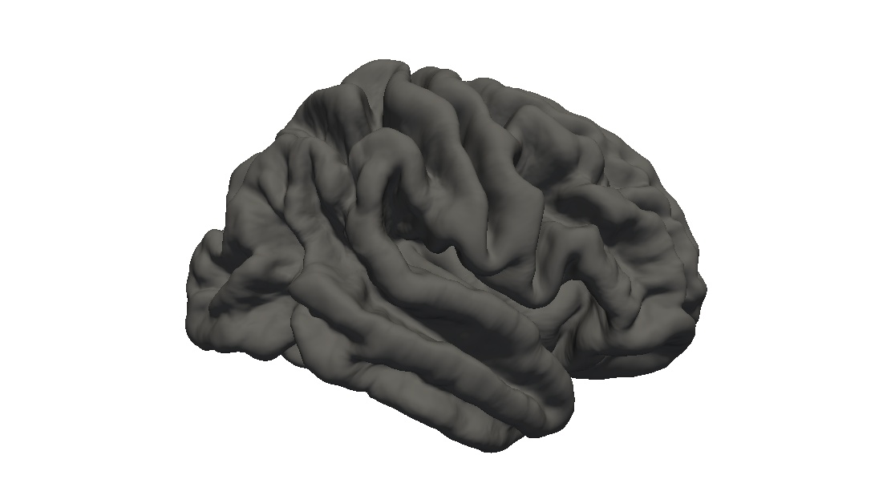
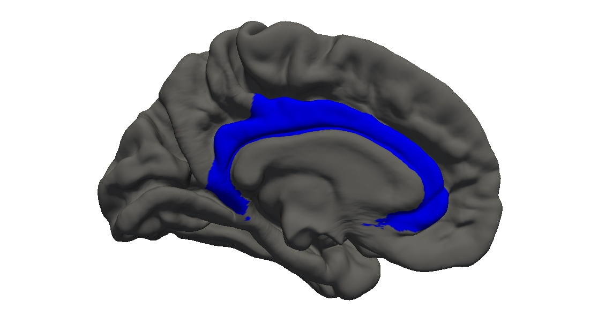
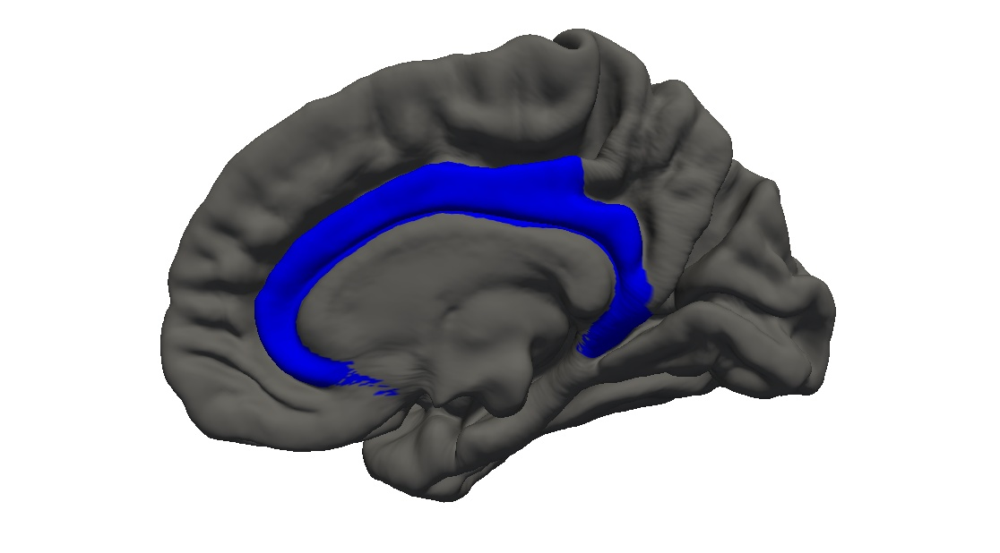

<h3>cingulate -- localization</h3>






<h3>cingulate -- <a href="../measurebased/FreeSurfer.lobes/pctmean.html">grey-white contrast</a></h3>


<h3>cingulate -- <a href="../measurebased/FreeSurfer.lobes/area.html">surface area</a></h3>


<h3>cingulate -- <a href="../measurebased/FreeSurfer.lobes/thickness.html">mean cortical thickness</a></h3>


<h3>cingulate -- <a href="../measurebased/FreeSurfer.lobes/thicknessstd.html">standard deviation of the cortical thickness</a></h3>


<h3>cingulate -- <a href="../measurebased/FreeSurfer.lobes/volume.html">grey-matter volume</a></h3>


<h3>cingulate -- <a href="../measurebased/FreeSurfer.lobes/meancurv.html">mean curvature</a></h3>


<h3>cingulate -- <a href="../measurebased/FreeSurfer.lobes/gauscurv.html">Gaussian curvature</a></h3>


<h3>cingulate -- <a href="../measurebased/FreeSurfer.lobes/foldind.html">folding index</a></h3>


<h3>cingulate -- <a href="../measurebased/FreeSurfer.lobes/curvind.html">curvature index</a></h3>


